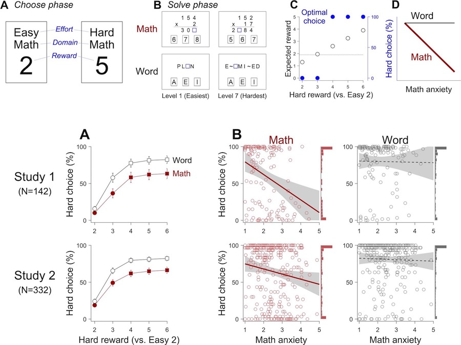

This GitHub repository contains the Choose-And-Solve Task, an effort-based decision-making task of the paper, titled “Calculated Avoidance: Math Anxiety Predicts Math Avoidance in Effort-Based Decision-Making” by Choe KW, Jenifer JB, Rozek CS, Berman MG, & Beilock SL (2019). The paper was published in Science Advances and is freely available at https://advances.sciencemag.org/content/5/11/eaay1062.
You can try the choose-and-solve task (CAST) at https://kywch.github.io/CAST_jsPsych/choose-and-solve-task.html. For the CAST details, please see our paper.
The CAST source code is freely available at https://github.com/kywch/CAST_jsPsych.
You can embed the CAST in your Qualtrics survey by following this tutorial: https://kywch.github.io/jsPsych-in-Qualtrics/choose-and-solve/.
The 3-alternative 1,999 math and 1,858 word problems used in the CAST are also freely available at https://github.com/kywch/CAST_jsPsych/.

The CAST is implemented using javascript and the jsPsych library. Some codes came from the Experiment Factory.
Abstract
Math anxiety—negative feelings toward math—is hypothesized to be associated with the avoidance of
math-related activities such as taking math courses and pursuing STEM careers. However, there is little
experimental evidence for the math anxiety-avoidance link. Such evidence is important for formulating how to
break this relationship. We hypothesize that math avoidance emerges when one perceives the costs of
effortful math engagement to outweigh its benefits and that this perception depends on individual
differences in math anxiety. To test this hypothesis, we developed an effort-based decision-making task in
which participants chose between solving easy, low-reward problems and hard, high-reward problems in both
math and nonmath contexts. Higher levels of math anxiety were associated with a tendency to select easier,
low-reward problems over harder, high-reward math (but not word) problems. Addressing this robust math
anxiety-avoidance link has the potential to increase interest and success in STEM fields.
The CAST is maintained by Kyoung Whan Choe.